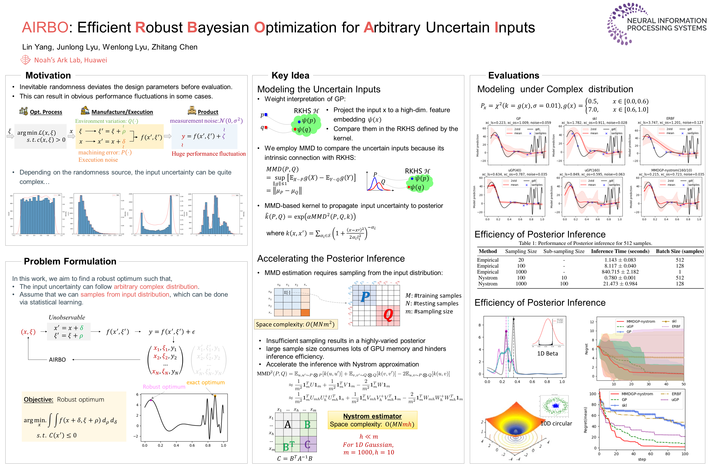

AIRBO: Efficient Robust Bayesian Optimization for Arbitrary Uncertain Inputs
Authors: Lin Yang, Junlong Lyu, Wenlong Lyu, Zhitang Chen
Venue: NeurIPS 2023
TL;DR: We introduce an efficient Bayesian Optimization framework that uses MMD kernel and Nyström approximation to find robust solutions for black-box functions subject to arbitrary, non-Gaussian input uncertainty.

Problem Context and Motivation
Bayesian Optimization (BO) has become a cornerstone technique for optimizing expensive black-box functions, finding applications in hyperparameter tuning, neural architecture search, and robotic control. However, a critical limitation emerges in real-world scenarios: input uncertainty. When attempting to evaluate a function at a chosen input point x, the actual evaluation often occurs at a perturbed point x’ due to manufacturing tolerances, execution noise, environmental factors, or measurement errors. This deviation between intended and actual inputs can severely undermine optimization performance and reliability.
Traditional BO approaches either ignore this uncertainty entirely or handle it under restrictive assumptions. Some methods require observing the exact deviated inputs x’, which is often impractical. Others limit input uncertainty to simple distributions like Gaussians or work only with specific kernel types. More sophisticated approaches that can handle arbitrary input distributions typically suffer from prohibitive computational costs, particularly the quadratic complexity of integral kernel methods that scales poorly with data size.
This paper introduces AIRBO (Arbitrary Input uncertainty Robust Bayesian Optimization), which addresses the fundamental challenge of optimizing functions under arbitrary input uncertainty while maintaining computational efficiency. The method aims to find robust optima that perform consistently well despite input perturbations, without requiring observation of exact deviations.
Technical Approach
AIRBO’s innovation lies in reformulating the Gaussian Process (GP) surrogate model to operate directly on probability distributions rather than point estimates. The approach tackles robust optimization by seeking solutions that maximize expected performance under input uncertainty distributions.
Maximum Mean Discrepancy Integration
The core technical contribution centers on integrating Maximum Mean Discrepancy (MMD) with Gaussian Processes. MMD provides a principled way to measure distances between arbitrary probability distributions by embedding them in a Reproducing Kernel Hilbert Space (RKHS). This allows AIRBO to construct a novel kernel over probability measures:
$$
\hat{k}(P, Q) = \exp(-\alpha \cdot MMD^2(P, Q))
$$
This kernel quantifies similarity between uncertain inputs represented as distributions, enabling the GP to directly model expected function values under uncertainty. The approach naturally incorporates input randomness into covariance computations and posterior distributions.
Nyström Approximation for Computational Efficiency
A major challenge with MMD-based approaches is computational complexity. Empirical MMD estimation requires O(m²) operations for m samples, creating bottlenecks in posterior inference. AIRBO addresses this through Nyström approximation, which reduces complexity from O(m²) to O(mh) by selecting a smaller subset of h samples (where h << m).
This approximation serves dual purposes: it stabilizes MMD estimation with smaller sample sizes and dramatically accelerates posterior inference while enabling GPU parallelization. The method maintains theoretical guarantees while achieving practical computational efficiency.
Experimental Validation and Results
Surrogate Modeling Performance
The evaluation demonstrates AIRBO’s superior ability to model arbitrary input uncertainties compared to existing methods. When tested with complex distributions like step-changing Chi-squared distributions (which transition from sharply peaked to flat with long tails), AIRBO successfully captures the uncertainty characteristics while competitor methods fail.
In experiments with Beta distributions showing varying asymmetry, AIRBO properly incorporates the uncertainty into its posterior, providing realistic uncertainty quantification. Traditional GP models tend to overfit observed samples, missing the underlying input randomness that AIRBO naturally accounts for.
Computational Efficiency Gains
The Nyström approximation proves highly effective in practice. For instance, with sampling size m=100 and sub-sampling h=10, the method achieves inference times of 0.78 seconds compared to 8.117 seconds for full empirical estimation with 512 samples. This represents more than a 10x speedup while maintaining comparable optimization performance.
The approximation also addresses the high variance problem in MMD estimation with small sample sizes, producing smoother, more optimizable posteriors that enable acquisition function optimizers to find true optima.
Real-World Application Performance
In the robot pushing benchmark, AIRBO demonstrates practical utility by optimizing push configurations under execution uncertainty modeled as a two-component Gaussian Mixture Model. The method successfully identifies optimal target locations and push strategies that result in controlled, centralized ball positions despite input randomness.
Baseline methods either ignore uncertainty (leading to inconsistent performance) or make incorrect distributional assumptions (resulting in suboptimal solutions). AIRBO’s ability to handle the complex, multi-modal uncertainty distribution directly translates to more reliable robotic control.